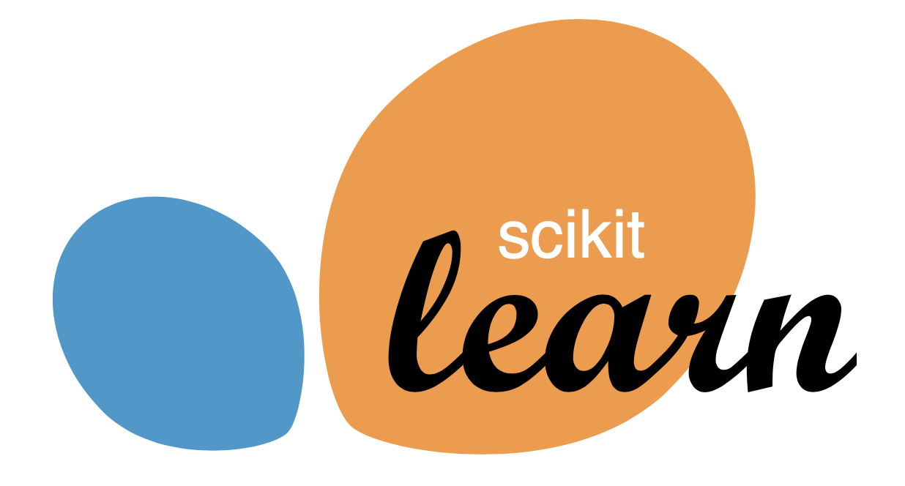

Tune’s Scikit Learn Adapters
Contents
Tune’s Scikit Learn Adapters#
Scikit-Learn is one of the most widely used tools in the ML community for working with data, offering dozens of easy-to-use machine learning algorithms. However, to achieve high performance for these algorithms, you often need to perform model selection.
{kind=link}
Scikit-Learn has an existing module for model selection,
but the algorithms offered (Grid Search via GridSearchCV and Random Search via RandomizedSearchCV)
are often considered inefficient.
In this tutorial, we’ll cover tune-sklearn, a drop-in replacement for Scikit-Learn’s model selection module
with state-of-the-art optimization features such as early stopping and Bayesian Optimization.
Tip
Check out the tune-sklearn code and documentation.
Overview#
tune-sklearn is a module that integrates Ray Tune’s hyperparameter tuning and scikit-learn’s Classifier API.
tune-sklearn has two APIs: TuneSearchCV, and TuneGridSearchCV.
They are drop-in replacements for Scikit-learn’s RandomizedSearchCV and GridSearchCV, so you only need to change
less than 5 lines in a standard Scikit-Learn script to use the API.
Ray Tune’s Scikit-learn APIs allows you to easily leverage Bayesian Optimization, HyperBand, and other cutting edge tuning techniques by simply toggling a few parameters. It also supports and provides examples for many other frameworks with Scikit-Learn wrappers such as Skorch (Pytorch), KerasClassifiers (Keras), and XGBoostClassifiers (XGBoost).
Run pip install "ray[tune]" tune-sklearn to get started.
Walkthrough#
Let’s compare Tune’s Scikit-Learn APIs to the standard scikit-learn GridSearchCV. For this example, we’ll be using
TuneGridSearchCV with a
SGDClassifier.
To start out, change the import the modules required for this example:
# Keep this here for https://github.com/ray-project/ray/issues/11547
from sklearn.model_selection import GridSearchCV
from sklearn.model_selection import train_test_split
from sklearn.linear_model import SGDClassifier
from sklearn.datasets import make_classification
from sklearn import datasets
from ray.tune.sklearn import TuneGridSearchCV
from ray.tune.sklearn import TuneSearchCV
And from there, we would proceed just like how we would in Scikit-Learn’s interface!
The SGDClassifier has a partial_fit API, which enables it to stop fitting to the data for a certain
hyperparameter configuration.
If the estimator does not support early stopping, we would fall back to a parallel grid search.
# Create dataset
X, y = make_classification(
n_samples=11000,
n_features=1000,
n_informative=50,
n_redundant=0,
n_classes=10,
class_sep=2.5,
)
x_train, x_test, y_train, y_test = train_test_split(X, y, test_size=1000)
# Example parameters to tune from SGDClassifier
parameter_grid = {"alpha": [1e-4, 1e-1, 1], "epsilon": [0.01, 0.1]}
As you can see, the setup here is exactly how you would do it for Scikit-Learn. Now, let’s try fitting a model.
tune_search = TuneGridSearchCV(
SGDClassifier(), parameter_grid, early_stopping=True, max_iters=10
)
import time # Just to compare fit times
start = time.time()
tune_search.fit(x_train, y_train)
end = time.time()
print("Tune GridSearch Fit Time:", end - start)
# Tune GridSearch Fit Time: 15.436315774917603 (for an 8 core laptop)
Note the slight differences we introduced above:
a
early_stopping, anda specification of
max_itersparameter
The early_stopping parameter allows us to terminate unpromising configurations. If early_stopping=True,
TuneGridSearchCV will default to using Tune’s ASHAScheduler.
You can pass in a custom algorithm - see Tune’s documentation on schedulers
here for a full list to choose from.
max_iters is the maximum number of iterations a given hyperparameter set could run for;
it may run for fewer iterations if it is early stopped.
Try running this compared to the GridSearchCV equivalent, and see the speedup for yourself!
# n_jobs = -1 enables use of all cores like Tune does
n_jobs = -1
sklearn_search = GridSearchCV(SGDClassifier(), parameter_grid, n_jobs=n_jobs)
start = time.time()
sklearn_search.fit(x_train, y_train)
end = time.time()
print("Sklearn Fit Time:", end - start)
# Sklearn Fit Time: 47.48055911064148 (for an 8 core laptop)
Using Bayesian Optimization#
In addition to the grid search interface, tune-sklearn also provides an interface, TuneSearchCV, for sampling from distributions of hyperparameters. In the following example we’ll be using the digits dataset from scikit-learn
In addition, you can easily enable Bayesian optimization over the distributions in only 2 lines of code:
# First run `pip install bayesian-optimization`
digits = datasets.load_digits()
x = digits.data
y = digits.target
x_train, x_test, y_train, y_test = train_test_split(x, y, test_size=0.2)
clf = SGDClassifier()
parameter_grid = {"alpha": (1e-4, 1), "epsilon": (0.01, 0.1)}
tune_search = TuneSearchCV(
clf,
parameter_grid,
search_optimization="bayesian",
n_trials=3,
early_stopping=True,
max_iters=10,
)
tune_search.fit(x_train, y_train)
print(tune_search.best_params_)
# {'alpha': 0.37460266483547777, 'epsilon': 0.09556428757689246}
As you can see, it’s very simple to integrate tune-sklearn into existing code.
Distributed execution is also easy - you can simply run ray.init(address="auto") before
TuneSearchCV to connect to the Ray cluster and parallelize tuning across multiple nodes,
as you would in any other Ray Tune script.
More Scikit-Learn Examples#
See the ray-project/tune-sklearn examples for a comprehensive list of examples leveraging Tune’s sklearn interface. Check out more detailed examples and get started with tune-sklearn!
Further Reading#
If you’re using scikit-learn for other tasks, take a look at Ray’s replacement for joblib, which allows users to parallelize scikit learn jobs over multiple nodes.